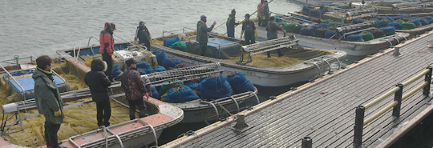
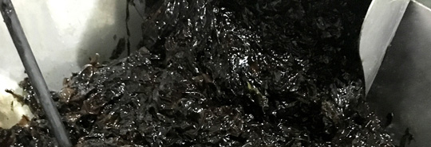
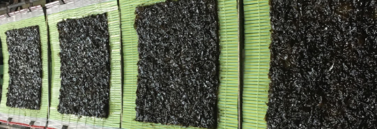
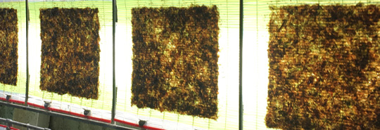
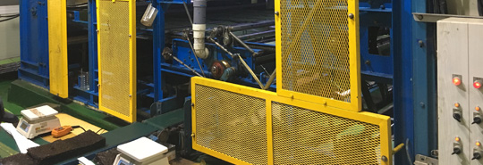
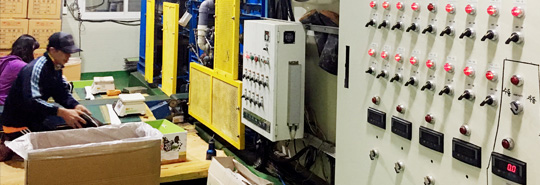
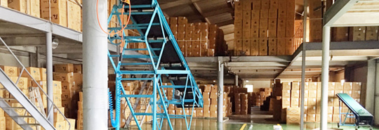

무안 황토갯벌 위의 지주식 김, 자연이 키우는 지주식 김양식입니다.
품질관리를 위하여 도리포 어촌계 및 조합원의 원초를 직수매합니다.

황토 갯벌의 해수를 이용하여 1차 세척합니다.


김원초에 섞여엤는 이물질들을 2회에 거쳐 제거합니다.
원초는 기본적으로 엽채가 굵어 그대로는 마른김으로 생산이 불가하므로 원초 분쇄를 진행합니다.
해수와 민물을 이용하여 숙성합니다.

오존 해수를 이용하여 교반작업을 합니다. 네모 반듯한 마른김 형태의 형틀에 분쇄된 원초를 투입하는 과정입니다.
전기방식 히트펌프를 이용하여 건조합니다.
파지 선별 및 식감 검사를 합니다.
속(톳) 단위의 포장을 진행합니다.
판매처 이동 및 화입, 냉동보관을 위하여 박스포장을 진행합니다.
